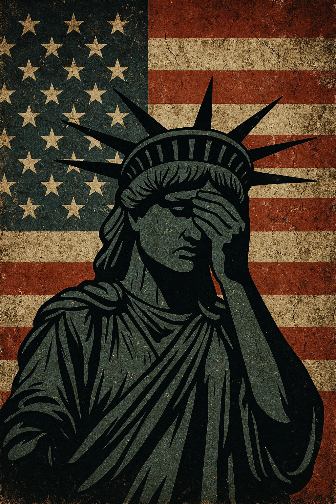

Publicado em 2025-04-12 16:32:16
Os Estados Unidos da América, durante décadas, foram vistos como o símbolo maior da democracia moderna, terra de liberdades civis, de separação de poderes, de imprensa livre e de equilíbrio institucional. Mas a ascensão de Donald Trump trouxe à tona uma fragilidade inquietante nesse modelo, como se o verniz democrático ocultasse há muito tempo fissuras profundas. Trump não criou o problema; apenas o personificou com brutal evidência.
A sua presidência abriu espaço para uma nova forma de autoritarismo populista, disfarçada de patriotismo. Num país onde a Constituição sempre foi quase sagrada, Trump ousou desacreditar eleições, atacar juízes, promover teorias da conspiração, hostilizar jornalistas e transformar inimigos políticos em alvos públicos. A retórica do ódio passou a ser normalizada. A mentira, promovida como opinião. A verdade, rotulada de "fake news".
Mas os danos não ficaram apenas na linguagem. Trump nomeou juízes com agenda ideológica extremista, influenciando decisões que reverteram direitos históricos, como o acesso ao aborto. Transformou o Supremo Tribunal numa trincheira ideológica. Enfraqueceu agências reguladoras, cortou recursos à ciência, desmantelou compromissos ambientais e usou o aparelho de Estado em benefício próprio.
Na arena internacional, isolou os EUA, abandonou tratados, insultou aliados e deu palco a autocratas. O que antes era diplomacia estratégica tornou-se um reality show de arrogância e imprevisibilidade.
E o que dizer do impacto social? Milhões de americanos sentem-se autorizados a odiar o diferente — seja pela cor da pele, identidade de género, crença religiosa ou orientação política. Grupos supremacistas ganharam coragem. A América armada tornou-se ainda mais perigosa. E o Capitólio, coração simbólico da democracia, foi invadido por fanáticos insuflados por um presidente em negação.
A ferida está aberta. E mesmo fora da Casa Branca, Trump continua a envenenar o discurso político, a semear dúvidas, a promover divisões. O seu culto de personalidade não é apenas um risco para os Estados Unidos — é um alerta global sobre como democracias podem ruir por dentro, sem tanques nas ruas, mas com mentiras no Twitter e aplausos nas urnas.
A outrora terra de liberdades é hoje uma democracia sitiada, a lutar para sobreviver à sua própria sombra. A luta não é entre partidos. É entre civilização e barbárie.
Créditos para IA, DeepSeek e ChatGPT (c)
Imagens cortesia da OpenAI (c)